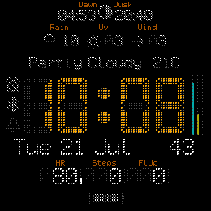

Readable At A Glance
The large segmented clock stays dominant while secondary metrics keep their own lanes.
← dawikur.dev · Garmin Connect IQ watch face
A dense digital watch face built around fast scanning: current time, weather, daily metrics, status signals and configurable color systems share one readable surface.



The large segmented clock stays dominant while secondary metrics keep their own lanes.
Accent, foreground and background combinations keep the face readable across bright daytime use and low-distraction AoD viewing.
Every widget has a compact role: icons, labels, values and gauges are tuned for quick inspection.